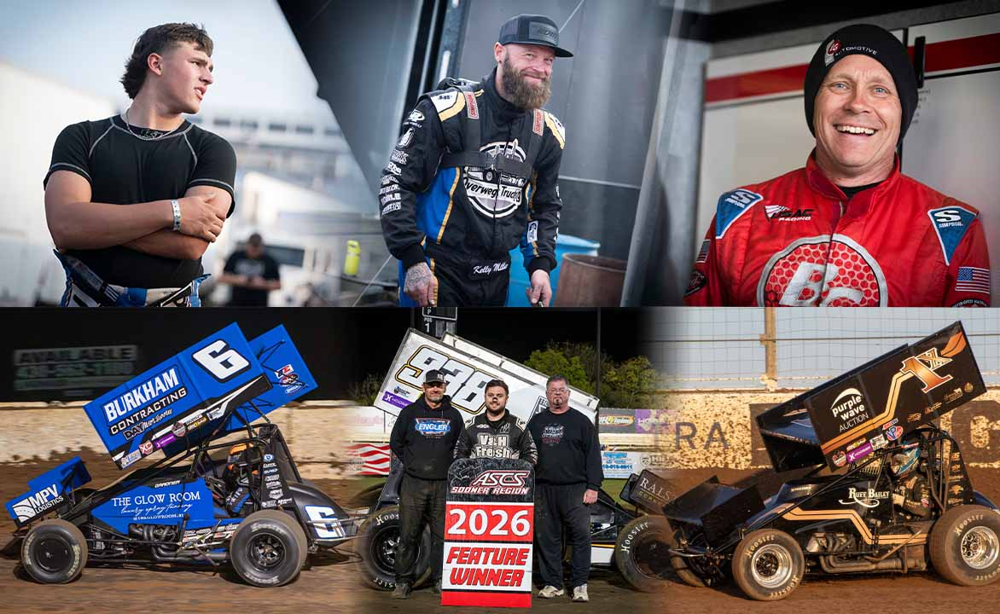

ASCS Crowns Six 2026 Region Champions
Bryant Wiedeman, Cody Gardner, Jack Thomas, Kelly Miller, Bradley Fezard and Bryan Gossel won the six American Sprint Car Series regional titles in 2026, the series announced.

The American Sprint Car Series named its six 2026 region champions on Friday, Nov. 20: Bryant Wiedeman (Gunsmoke Region), Cody Gardner (Hurricane Area Super Sprints), Jack Thomas (Malvern Bank Midwest Region), Kelly Miller (Northern Plains Region), Bradley Fezard (Sooner Region) and Bryan Gossel (Western Plains Region), according to an ASCS release by Matt Skipper.
Wiedeman, 21, won the first title in the Gunsmoke Region’s inaugural season, ASCS said. He finished in the top 10 in all five starts, with three podiums and no finish worse than sixth. Gardner, 40, of Benton, Arkansas, won eight features in his first HASS season, with 13 top-fives and top-10s in all 14 events. ASCS said it was his first winged sprint car title and his second ASCS title, after the 2023 Elite Non-Wing season.
Thomas, 17, of Bates City, Missouri, won the Midwest Region title in the region’s first season since 2014, his first full-time season in a 360, with five top-10s and two top-fives in eight races, according to the release. Miller, of Lethbridge, Alberta, won four Northern Plains features, at El Paso County, Sweetwater, Black Hills and Gillette Thunder Speedway. ASCS said it was his seventh Northern Plains campaign and that he won the 2025 Frontier Region title.
Fezard, of Bonnerdale, Arkansas, won the Sooner Region title without a feature win in seven starts, ASCS said. Gossel, 50, of Windsor, Colorado, won his second straight Western Plains title with two feature wins at El Paso County, five top-fives and six top-10s in eight races, and finished 33 points ahead of Blair Cooper.